단감
http://dangam.me
원격학습 신청하기
1. 본인 아이디 8자리숫자(2020+학번)를 입력하여 로그인 한 다음 비밀번호를 바꾼다.
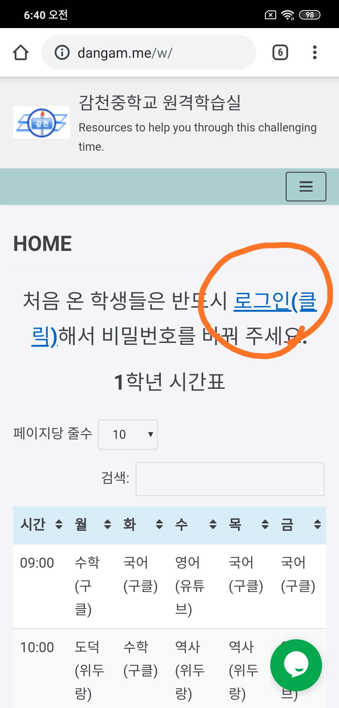
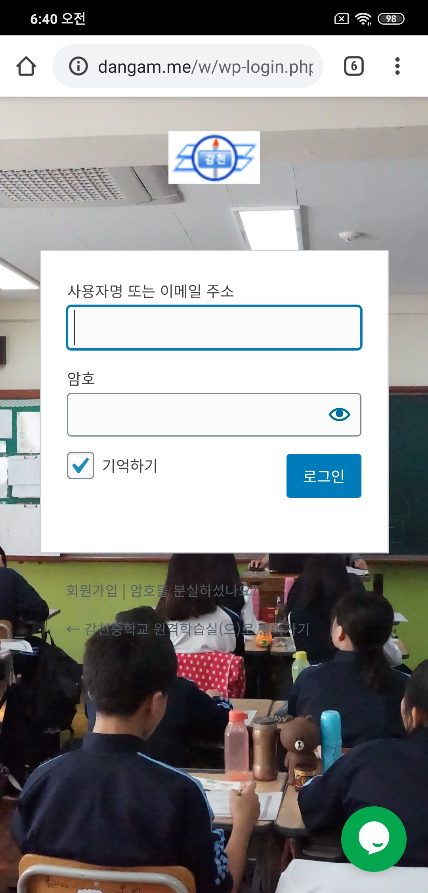
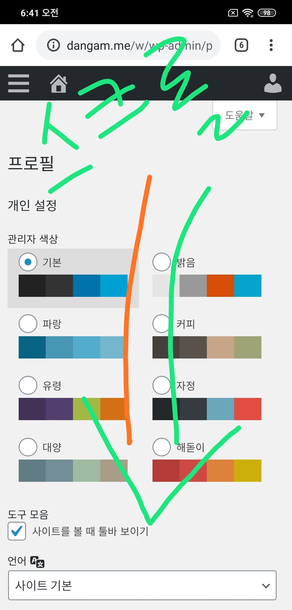
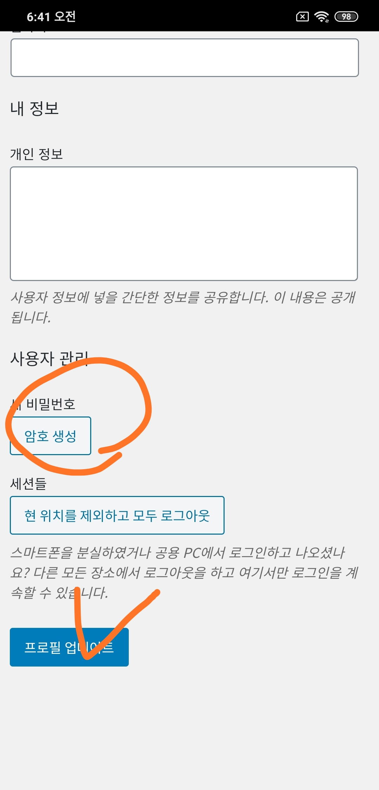
2. 단감으로 돌아가서
All Courses
를 클릭한다.
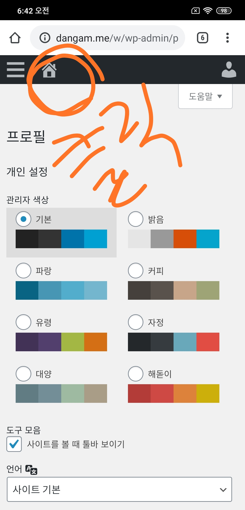
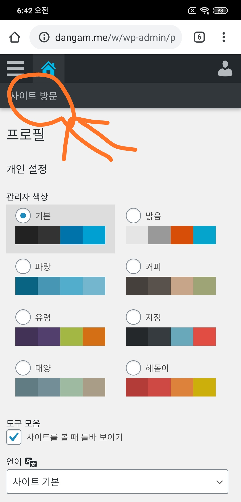
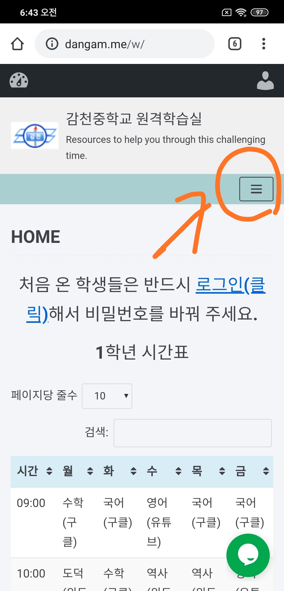
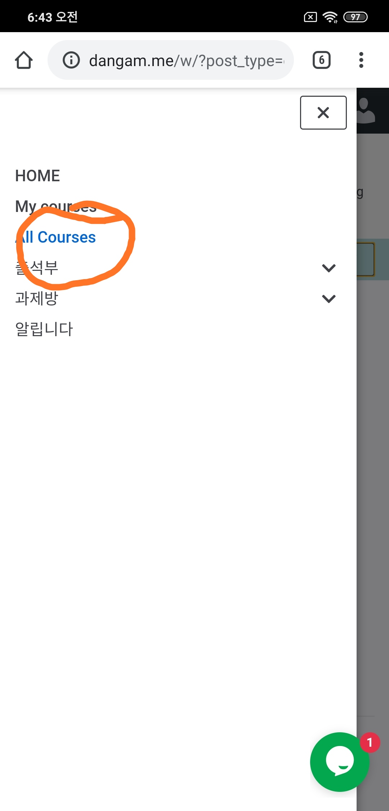
3. 개설된 강의 중에 본인 학년에 해당하는 강의를 찾아 START TAKING THIS COURSE 버튼을 클릭한다. 모두 반복
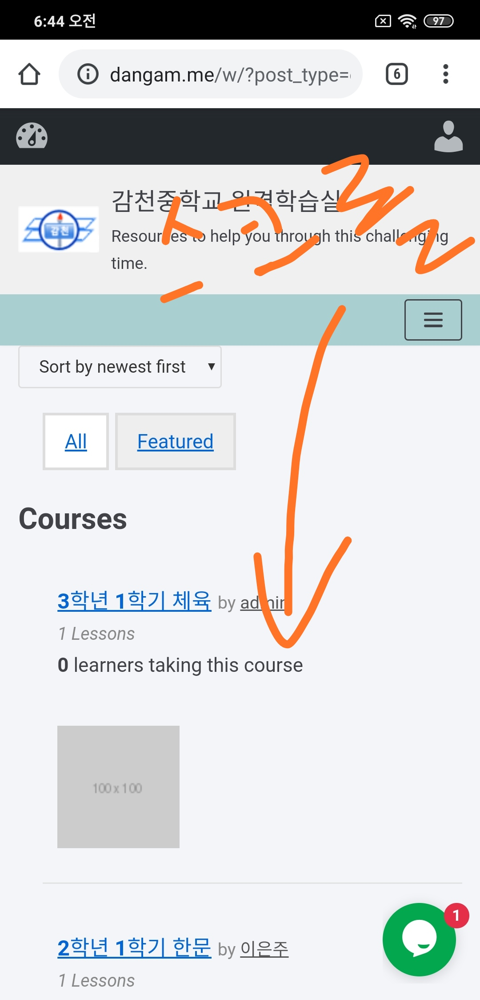
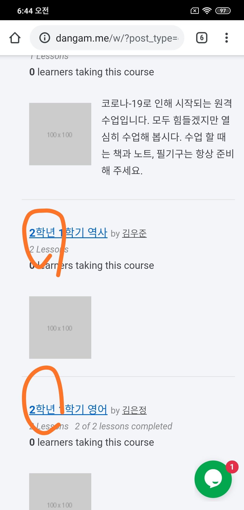
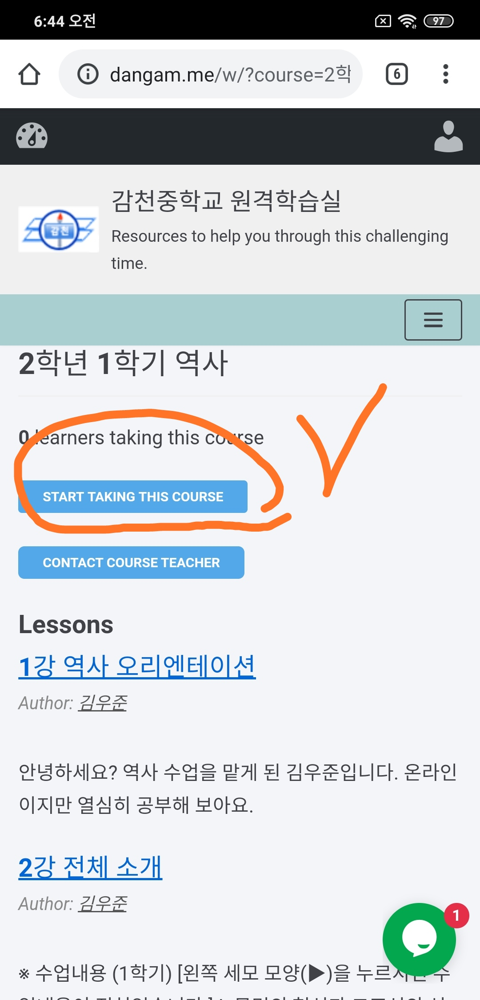
4. 단감으로 돌아가서 My Cours 를 클릭하여 모든 강의가 추가되었는지 확인한다.